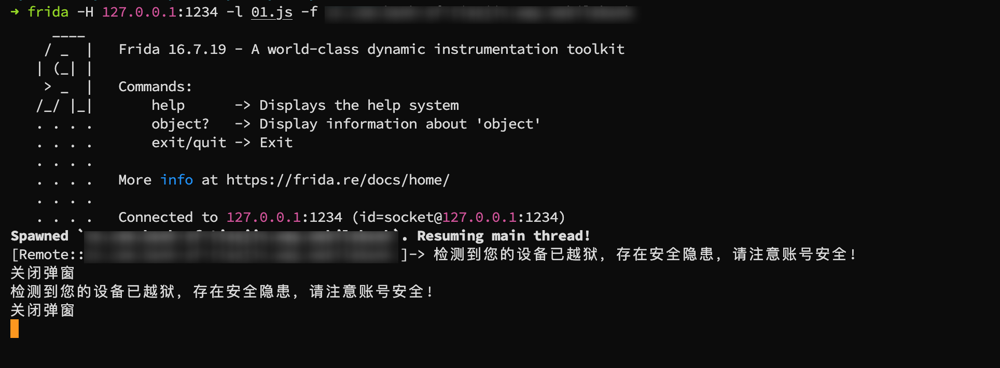

【IOS逆向】某APP越狱绕过
0x00 前言
在对某iOS应用程序进行测试的过程中，遇到了多种检测机制，包括越狱检测、代理检测和Frida检测等。本文简单分享一下”越狱绕过”的一种思路。
0x01 过程
1. 情况说明
当我们尝试打开该App时，它会弹出一个提示框，指出设备已被越狱，并要求用户确认。一旦点击“确定”按钮，App就会退出。最初的解决思路是利用常见的工具或越狱绕过脚本来尝试绕过检测，但这种方法并未成功。
2. Frida检测
该App还包含Frida检测机制，使用标准的Frida连接方式无法正常工作。通过使用suifei/fridare魔改Frida，可以绕过这一检测。这里不再赘述具体的细节。
3. 越狱检测
接下来，我们尝试了使用objection框架执行ios jailbreak disable命令来禁用越狱检测，但结果并不理想。同样的，使用其他常见的脚本也无法解决问题。
通过分析代码，我们发现许多与越狱相关的关键词和方法都被Frida进行了hook，但仍然未能完全绕过检测。

4. 绕过思路
经过进一步的观察，可以看到尽管App会显示越狱警告，但实际上并不会立即退出，而是在用户点击“确定”按钮后才真正退出。如果出现对话框后关闭这个对话框，或许就能绕过检测。
通过UI分析，我们发现这个警告是一个名为XXXDialog的对话框。
因此，我们可以使用Frida来hook该对话框，在消息中包含“越狱”关键字时自动关闭对话框。以下是实现这一功能的主要代码：
1 | const XXXDialog = "XXXDialog"; |
通过上述方法，我们成功绕过了越狱检测，使得App能够正常运行。
0x02 简单分析
这里APP检测的流程大概是这样的
1 | 发现越狱 → 创建并显示提示弹窗 → 用户点“确定” → 在按钮回调里 exit(0) |
伪代码:
1 | // 伪代码 |
当点击确定按钮后，程序会退出。我们不点击确定按钮，而是把它 dismiss()，后面的按钮回调就不会触发，exit(0) 也就不执行。于是主流程没有被“拦住”，App 继续跑，看起来就像“绕过了越狱限制”。
0x03 总结
这并不算真正的越狱绕过。问题在于应用把处置逻辑绑定在弹窗交互上：检测到越狱后未立即结束进程，而是等用户点“确定”再退出。通过在弹窗初始化时拦截并提前关闭，按钮回调不触发，进程继续运行，表面上呈现为“可在越狱设备使用”。根本原因是过于依赖 UI 而非统一的安全校验。在绕过其他APP时，可以考虑一下检测后退出的逻辑，如果需要用户确定后程序才退出，可以尝试一下hook对话框。这也是一种绕过的思路。